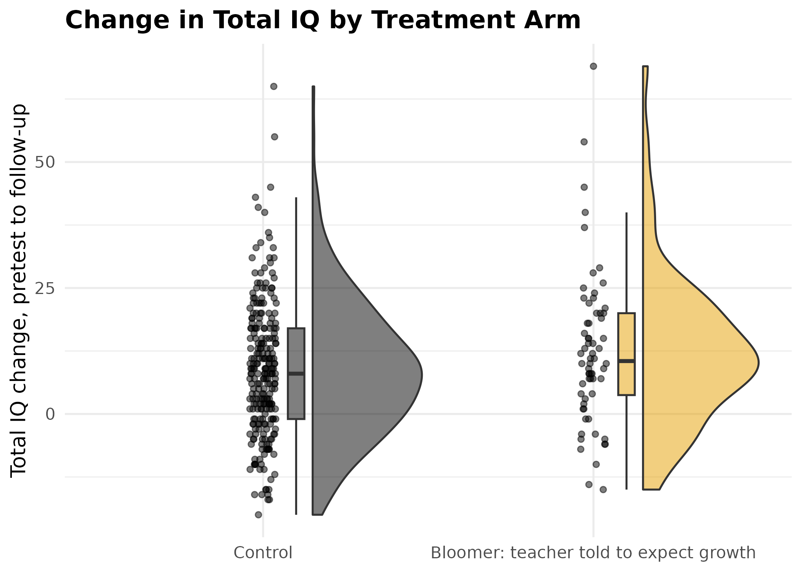
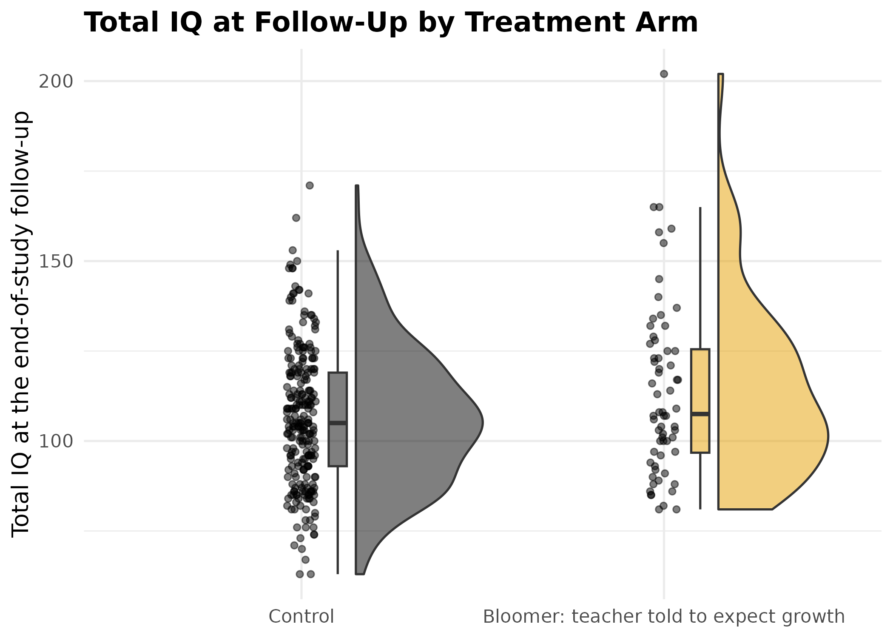

Visualizing Effect Sizes and Distributions With DMAR
Ken Kelley
2026-08-17
Source:vignettes/effect-size-visualization.Rmd
effect-size-visualization.RmdIntroduction
DMAR (Design, Measurement, and Analysis in R) is a modern and greatly expanded reimagining of the widely used MBESS package (Kelley, 2007a, 2007b). Both packages share the same statistical foundations (confidence intervals for standardized effect sizes, sample size planning from the accuracy in parameter estimation (AIPE) perspective, and measurement), but DMAR adopts a tidy, data-frame-first output style that plays well with modern R workflows.
Although the worked example below draws from educational psychology, the same tools apply equally to organizational behavior research (comparing intervention groups on engagement, commitment, or performance), biostatistics (group comparisons of clinical outcomes), information systems (user-experience or adoption studies), management science (process or training-program evaluations), sociology (program evaluations on attitudinal scales), and any other discipline where the inferential question is “how large is the effect, and how precisely have we estimated it?”
MBESS (Kelley, 2007a, 2007b) continues to be available on CRAN and remains a reliable choice, especially for users with existing scripts. DMAR is designed for new projects and teaching, where a consistent, tidy interface makes it easier to integrate effect size estimation with data visualization and reporting.
This vignette shows how to:
- Screen data with
descriptives(). - Visualize group distributions with raincloud plots (via the ggrain package).
- Compute and visualize standardized mean differences,
,
and ANOVA effect sizes with
plot_smd(),plot_ci(), andplot_R2().
Every plot produced by DMAR includes a confidence interval and the
sample size on which the estimate is based, two details that are
essential for transparent reporting (Cumming, 2012; Kelley &
Preacher, 2012). Both annotations are on by default and can be turned
off with show_ci = FALSE and
show_n = FALSE.
The implicit standard DMAR enforces is that an effect size, on its own, is not enough information to interpret. Without an interval, the reader cannot judge how precisely the effect has been estimated. The default annotations make these three pieces of information travel together. When you do choose to suppress them (typically for a slide or a teaching figure that needs to be visually minimal), the suppression is a deliberate editorial decision rather than an oversight.
The Data
The worked example uses pygmalion, which ships with
DMAR. These are the teacher expectancy data from Rosenthal and
Jacobson’s (1968) Pygmalion in the Classroom, the experiment
that gave the Pygmalion effect its name. At the start of the school year
a randomly chosen fifth of the children in each classroom were described
to their teachers as likely intellectual bloomers. Nothing else about
their schooling was manipulated; the treatment was the expectation
planted in the teacher. Intelligence was measured before the
manipulation and at two follow-ups.
| Variable | Description |
|---|---|
grade |
Grade in school at the start of the study |
treatment |
Control or Bloomer
|
iq_pre |
Total IQ before the manipulation |
iq_4 |
Total IQ at the intermediate follow-up |
iq_8 |
Total IQ at the end-of-study follow-up |
iq_gain |
iq_8 - iq_pre |
data(pygmalion)
table(pygmalion$treatment)
#>
#> Control Bloomer
#> 246 64
knitr::kable(head(pygmalion))| grade | treatment | iq_pre | iq_4 | iq_8 | iq_gain |
|---|---|---|---|---|---|
| 1 | Control | 45 | 58 | 76 | 31 |
| 1 | Control | 75 | 62 | 85 | 10 |
| 1 | Control | 61 | 82 | 87 | 26 |
| 1 | Control | 84 | 86 | 86 | 2 |
| 1 | Control | 65 | 76 | 78 | 13 |
| 1 | Control | 72 | 94 | 94 | 22 |
Two features of the design shape everything that follows. The arms
are very unequal, 64 bloomers against 246 controls, so precision is
governed by the smaller arm. And because assignment was random,
iq_pre carries no treatment effect to find; the difference
it shows is the chance variation a randomized experiment leaves behind,
which makes it a useful yardstick for reading the follow-up
differences.
This vignette treats the data as a source of effect sizes to display.
The analysis of covariance these data are best known for, in which the
two groups have different slopes on the pretest, is the subject of
vignette("pygmalion").
Descriptive Statistics
The descriptives() function provides a compact summary
useful for data screening and psychometric work. It reports per-variable
sample size, missingness, central tendency, spread, skewness, and excess
kurtosis, all in a single tidy data frame.
desc <- descriptives(
pygmalion[, c("iq_pre", "iq_4", "iq_8", "iq_gain")]
)
knitr::kable(desc$descriptives, digits = 3)| variable | type | n | n_missing | prop_missing | mean | median | sd | min | max | q25 | q75 | skewness | kurtosis |
|---|---|---|---|---|---|---|---|---|---|---|---|---|---|
| iq_pre | integer | 310 | 0 | 0 | 98.465 | 98 | 18.679 | 39 | 158 | 86.00 | 109 | 0.126 | 0.602 |
| iq_4 | integer | 310 | 0 | 0 | 101.677 | 101 | 17.823 | 58 | 157 | 89.25 | 112 | 0.369 | 0.411 |
| iq_8 | integer | 310 | 0 | 0 | 107.897 | 105 | 20.445 | 63 | 202 | 93.00 | 120 | 0.731 | 1.209 |
| iq_gain | integer | 310 | 0 | 0 | 9.432 | 9 | 13.757 | -20 | 69 | 1.00 | 17 | 0.796 | 1.767 |
Skewness and kurtosis values close to zero suggest approximate normality. As a rough guideline, or may warrant concern for normal-theory methods.
Adding correlations = TRUE appends a correlation matrix,
which is handy during scale development or when checking
multicollinearity.
desc_cor <- descriptives(
pygmalion[, c("iq_pre", "iq_4", "iq_8", "iq_gain")],
correlations = TRUE
)
knitr::kable(desc_cor$correlations, digits = 3)| iq_pre | iq_4 | iq_8 | iq_gain | |
|---|---|---|---|---|
| iq_pre | 1.000 | 0.720 | 0.756 | -0.234 |
| iq_4 | 0.720 | 1.000 | 0.819 | 0.240 |
| iq_8 | 0.756 | 0.819 | 1.000 | 0.459 |
| iq_gain | -0.234 | 0.240 | 0.459 | 1.000 |
The pretest correlates strongly with both follow-ups, which is why the pretest earns its place as a covariate, and it correlates negatively with the gain score, the familiar consequence of defining a gain as a difference from the pretest.
Visualizing Distributions: Raincloud Plots
Raincloud plots (Allen et al., 2019) combine a half-violin, jittered
raw data points, and a boxplot into a single display. They show the full
distributional shape, individual observations, and summary statistics at
once. The ggrain package (Patil, 2023) makes them easy
to produce with a single geom_rain() call.
library(ggrain)
# Source group colors from base R's colorblind-safe Okabe-Ito palette, the
# same palette DMAR's own plot_* functions use.
arm_fills <- setNames(unname(grDevices::palette.colors(2)),
c("Control", "Bloomer"))
arm_labels <- c(Control = "Control",
Bloomer = "Bloomer: teacher told to expect growth")
ggplot(pygmalion, aes(x = treatment, y = iq_gain, fill = treatment)) +
geom_rain(alpha = 0.5) +
scale_fill_manual(values = arm_fills) +
scale_x_discrete(labels = arm_labels) +
labs(
title = "Change in Total IQ by Treatment Arm",
x = NULL,
y = "Total IQ change, pretest to follow-up"
) +
theme_minimal(base_size = 13) +
theme(legend.position = "none",
plot.title = element_text(face = "bold"))
Raincloud plot of total IQ change from pretest to the end-of-study follow-up, by treatment arm, combining a half-violin density, jittered raw scores, and a boxplot summary (Allen et al., 2019).
ggplot(pygmalion, aes(x = treatment, y = iq_8, fill = treatment)) +
geom_rain(alpha = 0.5) +
scale_fill_manual(values = arm_fills) +
scale_x_discrete(labels = arm_labels) +
labs(
title = "Total IQ at Follow-Up by Treatment Arm",
x = NULL,
y = "Total IQ at the end-of-study follow-up"
) +
theme_minimal(base_size = 13) +
theme(legend.position = "none",
plot.title = element_text(face = "bold"))
Raincloud plot of total IQ at the end-of-study follow-up, by treatment arm. The two distributions overlap heavily, and the bloomer arm holds far fewer pupils, which the density curve smooths over and the jittered points do not.
The raincloud plots give an immediate qualitative impression of group differences. The next sections quantify those differences with standardized effect sizes and confidence intervals.
Standardized Mean Difference
The standardized mean difference (Cohen’s
)
expresses a group difference in standard-deviation units, making it
comparable across studies that use different measurement scales. DMAR’s
smd() computes the biased (Cohen) or unbiased (Hedges)
estimate; ci_smd() wraps it in a noncentral
-based
confidence interval.
# Split the data by treatment arm.
ctrl <- pygmalion$iq_gain[pygmalion$treatment == "Control"]
bloom <- pygmalion$iq_gain[pygmalion$treatment == "Bloomer"]
# Point estimate (Hedges' unbiased g).
smd(group_1 = bloom, group_2 = ctrl, unbiased = TRUE)| term | value |
|---|---|
| smd | 0.272 |
# 95% confidence interval.
d_hat <- smd(group_1 = bloom, group_2 = ctrl)$value
d_ci <- ci_smd(smd = d_hat, n_1 = length(bloom), n_2 = length(ctrl))
d_ci| term | value |
|---|---|
| lower_limit | -0.00388 |
| smd | 0.272 |
| upper_limit | 0.548 |
Confidence level: 95%
# The results-section sentence, written by the package so the numbers
# can never drift from the table they came from.
results_sentence(d_ci, label = "the standardized mean difference")
#> [1] "the standardized mean difference = 0.27, 95% CI [-0.00, 0.55]"Reported as one would in a results section, pupils in the bloomer arm gained more total IQ than controls, but not by an amount this study pins down: the standardized mean difference = 0.27, 95% CI [-0.00, 0.55]. The interval includes zero, so the data are consistent with no effect, which matches the omnibus test below (). The point estimate alone would overstate what the study established; the interval is what makes the uncertainty visible.
The pretest is the yardstick for reading that interval. Random
assignment guarantees no treatment effect on iq_pre, yet
the two arms differ there too:
d_pre <- smd(group_1 = pygmalion$iq_pre[pygmalion$treatment == "Bloomer"],
group_2 = pygmalion$iq_pre[pygmalion$treatment == "Control"])$value
ci_smd(smd = d_pre, n_1 = sum(pygmalion$treatment == "Bloomer"),
n_2 = sum(pygmalion$treatment == "Control"))| term | value |
|---|---|
| lower_limit | -0.0916 |
| smd | 0.184 |
| upper_limit | 0.459 |
Confidence level: 95%
A standardized difference of 0.184 on a measure taken before anything happened is a reminder of how much of an observed difference this design can generate on its own. That is the number against which the follow-up differences have to be read.
Visualizing With plot_smd()
plot_smd() draws two unit-variance normal distributions
separated by
.
The overlap makes the practical meaning of the effect size immediately
visible. A confidence interval and the per-group sample sizes are
displayed by default.
plot_smd(
group_1 = bloom,
group_2 = ctrl,
group_labels = c("Bloomer", "Control"),
title = "IQ Change: Bloomer Against Control"
)
Standardized mean difference in total IQ change between the bloomer and control arms, with 95% confidence interval and per-arm sample sizes, displayed as two unit-variance normal curves separated by the observed .
Visual Representation of
plot_smd() also accepts a value of
and the sample sizes directly, which is how it is used to calibrate
intuition about a magnitude rather than to display a particular
result.
plot_smd(smd = 0.50, n_1 = 30, n_2 = 30,
title = expression(paste("Visual Representation of ", italic(d), " = 0.50")))
Two unit-variance normal distributions separated by . The separation is real and the overlap is still substantial.
The figure is a corrective to the common misconception that a significant -value implies distributions that come apart. At the two curves are visibly separated and still share most of their mass, so a randomly chosen member of the higher group is only somewhat more likely than not to exceed a randomly chosen member of the lower one.
Numeric reference values for such as , , and are sometimes treated as defaults when no field-specific calibration is available, but they are not a substitute for substantive interpretation. A of in a randomized educational intervention may be remarkable; the same in a basic perception experiment may be uninteresting. Pairing the plot with a confidence interval prevents the second mistake that often accompanies the first, that is, reporting a point estimate as if it were known with certainty. Pairing it with the per-group sample sizes makes the precision visible at a glance.
ANOVA Effect Sizes
Omega Squared ()
Omega squared estimates the proportion of variance in the population
accounted for by the fixed effect, correcting for the upward bias of
(Olejnik & Algina, 2003). DMAR’s ci_omega_squared()
accepts either raw ANOVA summary values or a fitted aov()
object.
fit <- aov(iq_gain ~ treatment, data = pygmalion)
print_anova(summary(fit)[[1]])
#> Df Sum Sq Mean Sq F value Pr(>F)
#> treatment 1 705.8471 705.8471 3.763069 0.0533
#> Residuals 308 57772.2303 187.5722 NA <NA>
omega_result <- ci_omega_squared(fit)
#> Warning: The observed F_value is below the alpha_lower critical value of the
#> central F-distribution, so the lower confidence limit on omega squared is 0.
omega_result| effect | omega_squared | lower_limit | upper_limit | F_value | df_effect | df_error | N |
|---|---|---|---|---|---|---|---|
| treatment | 0.00883 | 0 | 0.0469 | 3.76 | 1 | 308 | 310 |
Visualizing With plot_ci()
plot_ci() creates a forest-plot-style display that works
with any DMAR confidence interval output. When it receives output from
ci_omega_squared(), it automatically extracts effect names,
point estimates, confidence bounds, and sample sizes.
plot_ci(omega_result,
reference_line = 0,
xlab = expression(omega^2),
title = expression(paste("Partial ", omega^2, " for the Treatment Effect on IQ Change")))
Forest-plot display of partial with 95% noncentral confidence interval (Steiger, 2004) for the treatment effect on IQ change.
The estimate is small and its interval reaches the zero line, which is the same conclusion the standardized mean difference reached, expressed in variance-explained units rather than standard-deviation units.
For factorial designs, plot_ci() produces a multi-row
forest plot with one row per effect:
# Using the built-in warpbreaks data (2 by 3 factorial).
fit_factorial <- aov(breaks ~ wool * tension, data = warpbreaks)
omega_factorial <- ci_omega_squared(fit_factorial)
#> Warning: The observed F_value is below the alpha_lower critical value of the
#> central F-distribution, so the lower confidence limit on omega squared is 0.
omega_factorial| effect | omega_squared | lower_limit | upper_limit | F_value | df_effect | df_error | N |
|---|---|---|---|---|---|---|---|
| wool | 0.0487 | 0 | 0.222 | 3.77 | 1 | 48 | 54 |
| tension | 0.217 | 0.0558 | 0.411 | 8.5 | 2 | 48 | 54 |
| wool:tension | 0.106 | 0.00191 | 0.298 | 4.19 | 2 | 48 | 54 |
plot_ci(omega_factorial,
reference_line = 0,
xlab = expression(omega^2),
title = expression(paste("Warpbreaks: Partial ", omega^2, " per Effect")))
Multi-row forest plot of partial for each effect in a 2 by 3 factorial ANOVA on the warpbreaks data. Reading down the rows is the recommended diagnostic for ANOVA model summaries (Maxwell, Delaney, & Kelley, 2027).
A multi-row forest plot of this kind is read row by row. Each row
gives the partial
for one effect, with the horizontal bar covering the confidence interval
and the dot marking the point estimate. The
reference_line = 0 argument draws a vertical guide at zero
variance explained: any interval that crosses that line is consistent
with no effect of that term. Reading down the rows lets you compare the
relative magnitudes of the effects at a glance, and the per-row
confidence intervals communicate which of those comparisons are reliable
and which are not.
Proportion of Variance Explained:
The squared multiple correlation
answers: “What proportion of the variance in the outcome is linearly
predictable from the set of predictors?” plot_R2() displays
this as a horizontal proportion bar, making the magnitude immediately
interpretable.
reg_fit <- lm(iq_8 ~ iq_pre + grade, data = pygmalion)
print_summary(reg_fit)
#> Coefficients:
#> Estimate Std. Error t value Pr(>|t|)
#> (Intercept) 25.8966232 4.16995307 6.2102913 < 0.0001
#> iq_pre 0.8231070 0.04156389 19.8034180 < 0.0001
#> grade 0.2795918 0.45619178 0.6128821 0.5404
#>
#> Residual standard error: 13.41 on 307 degrees of freedom
#> Multiple R-squared: 0.5725, Adjusted R-squared: 0.5697
#> F-statistic: 205.6 on 2 and 307 DF, p-value: < 0.0001The number of predictors is a single quantity here (there are two:
pretest IQ and grade), and every sibling function names it the same way:
p, whether in ci_R2(), plot_R2(),
or ci_R(). We store it once and pass it along.
R2_obs <- summary(reg_fit)$r.squared
N <- nrow(pygmalion)
p <- 2 # number of predictors
R2_ci <- ci_R2(R2 = R2_obs, N = N, p = p, random_predictors = TRUE)
R2_ci| term | value | prob_less | prob_greater |
|---|---|---|---|
| lower_limit | 0.494 | 0.025 | 0.975 |
| R2 | 0.573 | NA | NA |
| upper_limit | 0.639 | 0.975 | 0.025 |
Confidence level: 95%
plot_R2(R2 = R2_obs, N = N, p = p,
title = expression(paste(italic(R)^2, " for Follow-Up IQ on Pretest IQ and Grade")))
Squared multiple correlation with 95% confidence interval for the regression of end-of-study IQ on pretest IQ and grade.
The bar makes the “glass half-full, glass half-empty” nature of vivid: even an that is statistically significant may leave substantial unexplained variance. Here the pretest and grade together account for 57.3% of the variance in follow-up IQ, so most of it is accounted for and a substantial share is not.
The accompanying confidence interval makes a second, equally important point. The interval runs from 0.494 to 0.639, a span of 0.145 even at . Intervals on are wide, and they widen quickly as the sample gets smaller. Treating the point estimate as the answer, while ignoring that range, overstates what the data actually show.
Confidence Interval for the Multiple Correlation
For the multiple correlation
itself, ci_R() provides a confidence interval that can be
displayed with plot_ci():
| term | value | prob_less | prob_greater |
|---|---|---|---|
| lower_limit | 0.703 | 0.025 | 0.975 |
| R | 0.757 | NA | NA |
| upper_limit | 0.799 | 0.975 | 0.025 |
Confidence level: 95%
plot_ci(r_ci,
estimate = R_obs,
n = N,
reference_line = 0,
xlab = expression(paste("Multiple ", italic(R))),
title = expression(paste("Confidence Interval for the Multiple Correlation ", italic(R))))
Confidence interval for the multiple correlation
,
constructed from the random-predictor sampling distribution of
(Lee, 1971), the default for ci_R(). The sample size is
annotated above the interval, where the width of the interval cannot
push it off the panel.
Combining Multiple Effect Sizes
plot_ci() also accepts explicit vectors, so you can
build a side-by-side comparison of different effects:
# One standardized mean difference per measurement occasion, all from the
# same two arms, so the sample size is the same on every row.
n_b <- sum(pygmalion$treatment == "Bloomer")
n_c <- sum(pygmalion$treatment == "Control")
occasions <- c(iq_pre = "Pretest", iq_4 = "Intermediate", iq_8 = "Follow-Up")
d_vec <- vapply(names(occasions), function(v) {
smd(group_1 = pygmalion[[v]][pygmalion$treatment == "Bloomer"],
group_2 = pygmalion[[v]][pygmalion$treatment == "Control"])$value
}, numeric(1))
# Name the 'smd' argument: the first formal of ci_smd() is 'ncp', so a
# positional call would read these as noncentrality parameters.
ci_list <- lapply(d_vec, function(d) ci_smd(smd = d, n_1 = n_b, n_2 = n_c))
plot_ci(
estimate = d_vec,
lower = vapply(ci_list, function(x) x$value[1], numeric(1)),
upper = vapply(ci_list, function(x) x$value[3], numeric(1)),
names = unname(occasions),
n = n_b + n_c,
reference_line = 0,
xlab = expression(paste("Standardized Mean Difference (", italic(d), ")")),
title = "The Bloomer Effect Across Measurement Occasions"
)
Standardized mean differences with 95% confidence intervals for the bloomer effect at three points in the study, displayed as a combined forest plot. The sample size is annotated above each interval, so an interval that runs wide cannot push it off the panel.
Read down the rows, the display says something the individual estimates do not. The pretest row, where random assignment guarantees no effect, is not centered on zero. The two follow-up rows sit further from zero than the pretest row does, which is the pattern an expectancy effect would produce, but every interval is wide enough that the ordering of the three is not established by these data. A forest plot earns its place here precisely because it puts that comparison in one picture.
Turning Off Annotations
Every DMAR plot function shows the confidence interval and sample size by default, because these are essential for transparent scientific reporting. However, for presentations or simplified displays, both can be suppressed:
plot_smd(smd = 0.50, show_ci = FALSE, show_n = FALSE,
title = expression(paste("Minimal Display of ", italic(d), " = 0.50")))
Minimal plot suitable for a slide or teaching figure, with confidence
interval and sample size suppressed via show_ci = FALSE and
show_n = FALSE.
In a manuscript or report, the recommendation is to leave both annotations on. In a slide deck where the same information appears in the surrounding text, suppression is reasonable.
Customizing the Plots
Every DMAR plot function returns a ggplot2 object, which
means the output is a fully editable plot rather than a fixed image. Any
layer, scale, theme, or annotation supported by ggplot2 can
be added on top.
plot_smd(smd = 0.65, n_1 = 80, n_2 = 80,
group_labels = c("Treatment", "Control"),
title = "Reading Intervention") +
ggplot2::theme(legend.position = "top",
plot.title = ggplot2::element_text(size = 14,
face = "bold")) +
ggplot2::scale_fill_manual(
values = c("Treatment" = "#1B7837", "Control" = "#762A83"), name = NULL
)
#> Scale for fill is already present.
#> Adding another scale for fill, which will replace the existing scale.
Every DMAR plot returns a ggplot2 object, so additional
ggplot2 layers can be added with +. Here the
legend is moved to the top, the title is bold, and the group fills
follow a colorblind-friendly palette.
The same idiom (add + followed by another
ggplot2 layer) works for plot_ci() and
plot_R2() as well. Because the underlying object is just a
ggplot, it can be saved with
ggplot2::ggsave(), embedded in an R Markdown document, or
further composed into multi-panel figures with packages like
patchwork or cowplot.
A Note on MBESS
DMAR is a more modern, more general, and greatly expanded reimagining of the MBESS package (Kelley, 2007a, 2007b), which remains available on CRAN. MBESS provides the same core capabilities (confidence intervals for standardized effect sizes, sample size planning, and measurement) implemented in a conventional S3 style. DMAR reimagines that work with:
-
Tidy output: all functions return data frames with
termandvaluecolumns (or similarly structured output), making results easy to pipe into downstream analysis and visualization. -
Integrated visualization:
plot_smd(),plot_ci(), andplot_R2()produce publication-qualityggplot2graphics with confidence intervals and sample sizes shown by default. -
Modern R conventions:
TRUE/FALSE(neverT/F),warning()instead ofprint()for diagnostics, andrequireNamespace()for optional dependencies.
For existing scripts and reproducibility, MBESS continues to work exactly as it always has. For new projects and teaching, DMAR offers a cleaner, more consistent interface.
References
Allen, M., Poggiali, D., Whitaker, K., Marshall, T. R., & Kievit, R. A. (2019). Raincloud plots: A multi-platform tool for robust data visualization. Wellcome Open Research, 4, 63.
Cohen, J. (1988). Statistical power analysis for the behavioral sciences (2nd ed.). Lawrence Erlbaum.
Cumming, G. (2012). Understanding the new statistics: Effect sizes, confidence intervals, and meta-analysis. Routledge.
Hedges, L. V., & Olkin, I. (1985). Statistical methods for meta-analysis. Academic Press.
Kelley, K. (2007a). Confidence intervals for standardized effect sizes: Theory, application, and implementation. Journal of Statistical Software, 20(8), 1–24.
Kelley, K. (2007b). Methods for the behavioral, educational, and social sciences: An R package. Behavior Research Methods, 39(4), 979–984.
Kelley, K., & Preacher, K. J. (2012). On effect size. Psychological Methods, 17(2), 137–152.
Lee, Y.-S. (1971). Some results on the sampling distribution of the multiple correlation coefficient. Journal of the Royal Statistical Society. Series B, 33(1), 117–130.
Maxwell, S. E., Delaney, H. D., & Kelley, K. (2027). Designing experiments and analyzing data: A model comparison perspective (4th ed.). Routledge.
Olejnik, S., & Algina, J. (2003). Generalized eta and omega squared statistics: Measures of effect size for some common research designs. Psychological Methods, 8(4), 434–447.
Patil, I. (2023). ggrain: A ‘ggplot2’ extension for raincloud plots. R package. https://CRAN.R-project.org/package=ggrain
Rosenthal, R., & Jacobson, L. (1968). Pygmalion in the classroom: Teacher expectation and pupils’ intellectual development. Holt, Rinehart and Winston.
Steiger, J. H. (2004). Beyond the F test: Effect size confidence intervals and tests of close fit in the analysis of variance and contrast analysis. Psychological Methods, 9(2), 164–182.